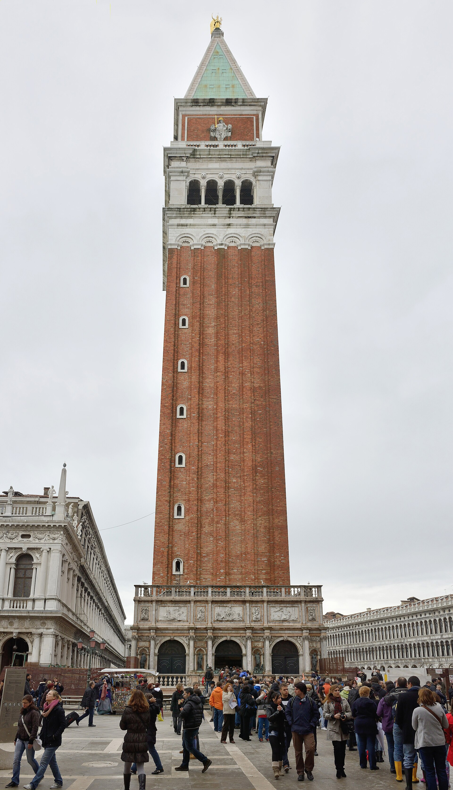
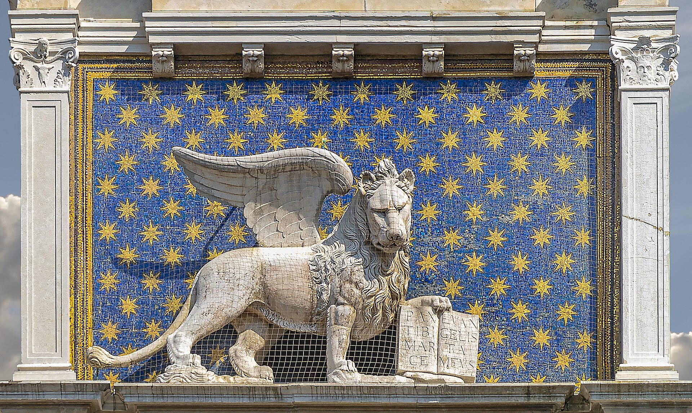
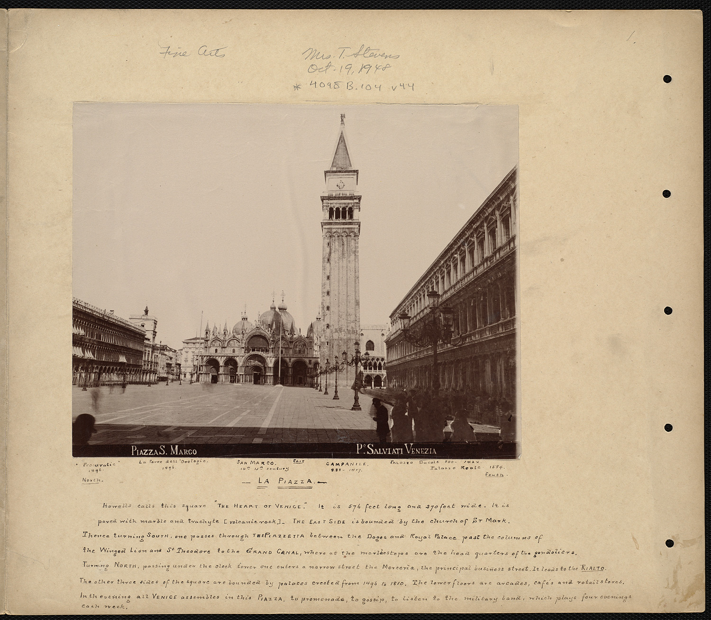
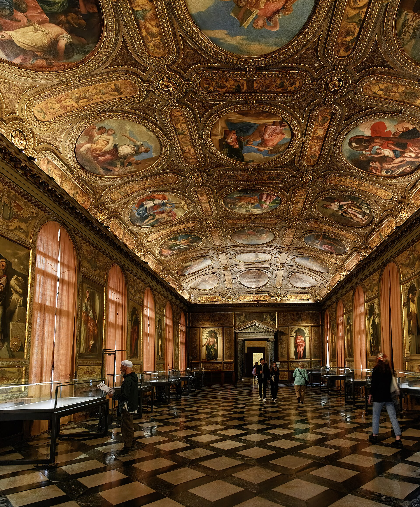

由大广场（Piazza）、小广场（Piazzetta）与两根圆柱构成的三段式空间序列：从 9 世纪的钟楼基座到 19 世纪的拿破仑翼，一千年的建筑史叠加在不到一公顷的石板上。约翰·拉斯金在《威尼斯之石》里用了整章来剖析它--它是西方城市空间设计的第一现场。
看点路线
Il Percorso
- 1先退到广场西端看整体：三面柱廊 + 敞开的泻湖端--“封闭与开放”的城市设计母题
- 2登钟楼：圣马可湾、泻湖与红色屋顶的 360 度全景
- 3时钟塔整点看摩尔人敲钟；蓝金钟面找黄道十二宫
- 4索维诺图书馆立面细看：威尼斯文艺复兴第一座世俗公共建筑
- 5两根柱子之间是古代的“法定入口”--从海上进城的仪式之门
建筑看点
La Piazza · 7 个千年细节

三段式空间序列
大广场（宗教）-> 小广场（政治）-> 泻湖（海权），三段递进的空间叙事是西方城市设计的教科书案例。透视灭点指向水面--威尼斯把“开放端”给了大海，这是它的世界观。

圣马可钟楼
98.6 米的赤砖方塔。1902 年整体坍塌后按“原样重建”（com'era dov'era）--这句口号后来成为全球建筑修复界的名言。电梯登顶是拍摄全城与泻湖的第一机位。

时钟塔
毛罗·科杜西设计的蓝金珐琅钟面：24 小时制 + 黄道十二宫。顶部两尊青铜“摩尔人”整点敲钟；每年主显节与升天节，三贤士与天使机械组从钟面两侧巡游--16 世纪的机械剧场仍在运行。

检察官长廊
三面围合的连贯柱廊：旧翼（15-16 世纪威尼斯哥特）、新翼（16 世纪文艺复兴）与拿破仑翼（1810）--欧洲拱廊街的祖先。底层咖啡馆已运营两个半世纪。

圣索维诺图书馆
雅各布·圣索维诺设计的威尼斯文艺复兴第一座世俗公共建筑。帕拉第奥在《建筑四书》里称它“自古以来最华丽建筑的典范”。顶层露台的战神与海神雕像是圣索维诺本人之作。
两根圆柱
花岗岩柱来自东方，柱顶分别是圣马可飞狮与城市旧主保圣托达罗--中世纪从海上进城的“法定门户”，也是古代处刑之地。威尼斯人至今不从两柱之间走过。
洛杰塔
钟楼脚下的小凉亭，圣索维诺的青铜浮雕讲着神话故事--它曾是检察官们的等候厅。1902 年钟楼坍塌时被压碎，后按原样重建。
历史故事
Le Storie
壹“欧洲的客厅”从何而来
1797 年拿破仑占领威尼斯后改造广场北端：拆掉一座教堂，建起“拿破仑翼”（舞厅）。当时随行记者写道：圣马可广场是“全欧洲的客厅”（le salon de l'Europe）--从此这个昵称传遍世界。
广场功能的演变本身就是一部社会史：中世纪市场 -> 共和国仪式剧场 -> 咖啡馆社会的沙龙。今天的游客举着冰淇淋站在同一块石板上，是这条延长线上的最新一幕。
贰1902：塌掉的钟楼
1902 年 7 月 14 日早晨 9 点 47 分，矗立近四百年的圣马可钟楼整体坍塌--监视数日的守门人及时撤离，唯一的受害者是看门人的猫。碎石埋住了广场一角与 Sinatra 角的小屋（幸运未伤人）。
威尼斯人投票决定“原样重建”（com'era, dov'era--它原来什么样，就建成什么样）：1912 年新塔落成，内部换上了现代混凝土结构。这句口号后来成为全球建筑保护界的名言。
叁时钟塔的机械剧
1499 年建成的时钟塔是一座“运行中的天文仪器”：中央钟面为 24 小时制 + 黄道十二宫--威尼斯当时的海上导航科技直接上了墙。
最精彩的是每年仅启动两次的机械组：1 月 6 日主显节与耶稣升天节，东方三贤士与吹号天使从钟面两侧的门里走出，向圣母像鞠躬巡游--一套运行了五百多年的发条剧场。
顶上的两尊青铜“摩尔人”（因肤色黝黑得名）整点抡锤敲钟--老的敲钟、少的报时，分工明确。
肆索维诺：从逃亡者到总建筑师
1527 年罗马之劫，雕塑家雅各布·圣索维诺逃到威尼斯，被提香收留。他后来成为共和国的“总建筑师”，在广场边建起了这座图书馆（1537-1588）--威尼斯第一座文艺复兴世俗公共建筑。
施工并不顺利：1545 年部分拱顶坍塌，圣索维尼被短暂关入监狱（据传提香等人求情获释）。完工后，帕拉第奥在《建筑四书》里写道：它是“自古以来最华丽建筑之一”。
图书馆顶层今日仍藏书：一栋 16 世纪的图书馆至今还在做图书馆--威尼斯的连续性有时的确近乎顽固。
伍拉斯金的“石头圣经”
1851-1853 年，英国批评家约翰·拉斯金分三卷出版《威尼斯之石》--他在此前多次长住威尼斯，对圣马可广场与总督宫做了逐石测绘。
这本书把威尼斯哥特推为“建筑良知的巅峰”，直接引发了英国的哥特复兴运动--议会大厦周边的一代建筑都受它影响。拉斯金同时警告：“所谓修复，是最彻底的毁灭。”--现代保护运动的宣言由此而来。
今天广场上的每一块石头，都曾被这位维多利亚时代的英国人用放大镜看过。
陆鸽子的战争
圣马可广场的鸽子曾是城市的仪式的一部分：每年圣灵节，总督在广场放飞鸽子纪念“神的恩典”。到了 20 世纪，鸽子繁衍到数万只，大理石与铜像被粪便腐蚀，清洁账单高昂。
2008 年市政府立法禁止喂鸽（违者罚款 €50-200），卖鸽食的摊贩被取缔。十年间鸽子数量从数万降到数百。
今天的广场少了些“经典画面”，多了些体面--城市与鸽子的百年战争，最终由立法收场。
柒咖啡馆的“乐队竞赛”
Florian（1720 年开业，世界最古老的咖啡馆之一）与对面的 Quadri（1775）在 19 世纪展开了一场“乐队军备竞赛”：各自雇请乐团在门口对台演奏，争夺游客与名流的耳朵。
拜伦、狄更斯、普鲁斯特、卡萨诺瓦都是这些咖啡馆的常客--Florian 的一些包间至今保留着当年的名字（西班牙厅、东方厅、镜厅）。
如今两家仍然在“对峙”：露天乐队的曲目隔着广场互相飘荡--一杯 €12 的咖啡买的不是咖啡，是一个两百年座位的入场券。
捌涨潮之镜
圣马可广场是全城海拔最低点之一：涨潮（acqua alta）时水从排水口倒灌，广场变成一面浅浅的镜子--圣马可的立面、钟楼与飞狮同时映在石板上。
1966 年 11 月 4 日的大潮（1.94 米）淹没全城，数万件艺术品受损，“泥天使”志愿者从世界各地赶来--现代威尼斯保护运动由此启动，2020 年代 MOSE 潮汐屏障最终建成。
对摄影师来说，涨潮的广场是“限量版”：水镜中的圣马可是这座城市最魔幻的 selfie 背板。
玖只有圣马可配叫 Piazza
威尼斯人的语言规矩：只有圣马可广场叫 Piazza，城中其余的广场一律叫 Campo（“田地”）--这是几百年口语形成的“不成文法”，至今没人敢违反。
每个 campo 以水井头为中心：井是社区的社交与生存枢纽。从 Campo 到 Piazza，是从“邻里”到“国家”的空间升级。
下次问路时说“Piazza San Marco”，本地人一听就知道你是做过功课的游客。
拾两根柱子之间
小广场入口的两根花岗岩柱（约 1172 年立）来自东方：柱顶的飞狮与圣托达罗构成中世纪威尼斯的“城门”--从海上进城的人必须从两柱之间穿过。
这里也是古代的行刑地：囚犯在柱间被处决或示众。威尼斯人至今有一个不成文的习惯：不从两柱正中走过。
两柱之间的框景是全威尼斯被拍最多的“画框”：飞狮 + 总督宫角 + 圣乔治岛--一张照片装下三件权力符号。
参观贴士
Consigli Pratici
- 清晨 7-8 点的广场几乎无人，是拍摄空景的唯一时段
- 钟楼电梯旺季排队 1 小时起--官网订时段票或傍晚去（开到 21:00，看日落最佳）
- 时钟塔内部必须跟导览（约 45 分钟），机械装置的讲解值得
- Florian（1720）与 Quadri 两家咖啡馆的露天乐队有“座位附加费”（€6/person）--站吧台喝省一半
- 涨潮（acqua alta）时广场会积水：酒店前台有免费鞋套，拍“水镜广场”反而是奇遇
顺路同游
Da Non Perdere